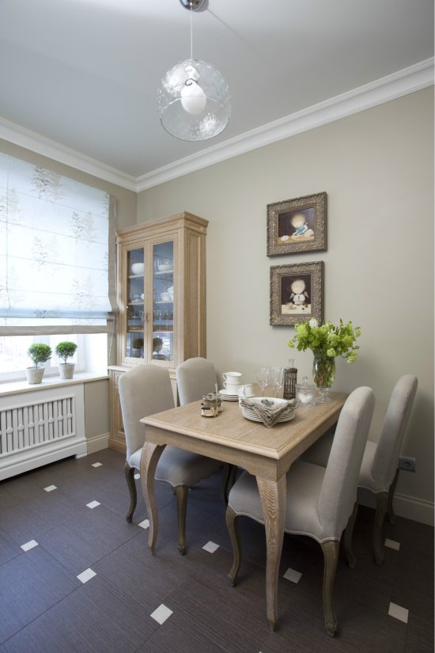

Подушки в интерьере: как выглядит декор в марокканском стиле
 Декор и дом Идеи для интерьера Архитектура Идеи для экстерьера Двор и сад Больше укр рус Новости Экономика Showbiz Здоровье Спорт Техно Учеба Travel Финансы Life Вкусно Здоровье Спорт Техно Учеба Travel Финансы Life Вкусно Киев Львов Дом Идеи Агро Инновации Men Недвижимость Сборная Актив Полезно Развлечения Games Инвестиции Покер Auto Семья Likar Новости здоровья Радио Красота Кино Lifestyle Fashion Традиции Pets Декор и дом Идеи для интерьера Архитектура Покупка недвижимости Идеи для экстерьера Двор и садСидеть на полу: что такое марокканские подушки и как их разместить в интерьере – идеи с фото
13 января 2021 , 16:36 - Читати новину українською Подушки в интерьере: марокканский стиль / Remont-samomyМожет быть множество причин сидеть на полу. Кто-то любит активные игры с детьми, кому-то так удобно проводить турниры по шахматам или настольным играм. Если в вашей квартире немного мебели, а нужно разместить большую компанию – придется обустроить места для сидения на полу.
Если у вас есть дети , или вы сами любите сидеть на полу перед телевизором – без специальных подушек не обойтись. Редакция Дизайн 24 рассказывает о марокканских подушках, которые украсят ваш интерьер.
Оригинально Ковры, которые заставят вас чувствовать себя неловко: забавная подборка с фото
Комната в марокканском стиле / Фото Pinterest
Что такое марокканские подушки
Из подушек можно сформировать удобный диван / Фото Pinterest
Марокканскими называют плоские квадратные или прямоугольные подушки, на которых можно удобно сидеть на полу. Внутри они являются достаточно твердыми и плотными – чтобы человек не проваливался до пола. С воей твердостью такие подушки напоминают диван.
К какому стилю подходят
Традиционные подушки имеют вышитые орнаменты / Фото Pinterest
Классические марокканские подушки имеют колоритные вышитые орнаменты. Их выполняют в оттенках красного и желтого цветов – традиционных для народов, живущих в пустыне.
Такой декор подойдет к интерьерам в восточном стиле. Также марокканские подушки хорошо смотрятся в классическом загородном стиле: они гармонично дополняют дерево, ковры, камин.
Марокканские подушки в современном интерьере / Фото Pinterest
Если традиционные узоры на подушках не подходят к вашему жилищу, можно найти варианты с наволочками нейтральных оттенков.
Как использовать
Вариант использования интерьерных подушек / Фото Pinterest
Подушки для пола удобны тем, что их можно трансформировать. Из марокканских подушек можно сложить диван, или разбрасывать их по комнате, сделав островки для сидения гостей.
Подушки кладут не только на пол, но и на поддоны, тумбы, или другие предметы, на которых можно обустроить места для сидения. В летний период из таких подушек можно сделать зону для отдыха на балконе, террасе или во внутреннем дворе.
Отличное решение для квартиры-студии
Подушки, которые используют вместо стульев / Фото Pinterest
Удобно иметь запас марокканских подушек в небольшой квартире. Они заменят кровать, если к вам приедут гости. На выходных можно достать подушки из кладовой и отдыхать для них всей семьей. Когда подушки не нужны – их легко спрятать в шкафу или на балконе.
Вам понравится Кроваво-красный дом для художников: фото современной резиденции в Италии
Автор: Алина РудченкоЧитайте 24 канал в Google News
Декор и дом Дизайн Идеи для интерьерапоказать все скрыть
Поделиться новостью
Если Вы обнаружили ошибку на этой странице, выделите ее и нажмите Ctrl+Enter Главные новости 15 февраля , 13:05Ретро-холодильник в интерьере: идеи с фото
12 февраля , 19:36Сложно исправить: дизайнеры интерьера ненавидят эти недостатки планирования
12 февраля , 09:12Придумали студенты: 5 лучших идей для интерьера с недели дизайна в Стокгольме
Последние Новости Ретро-холодильник в интерьере: идеи с фото 13:05 Сложно исправить: дизайнеры интерьера ненавидят эти недостатки планирования 19:36 Придумали студенты: 5 лучших идей для интерьера с недели дизайна в Стокгольме 09:12 Больше новостей Публикации 15 февраля , 13:05 Ретро-холодильник в интерьере: идеи с фото Аліна Рудченко 12 февраля , 19:36 Сложно исправить: дизайнеры интерьера ненавидят эти недостатки планирования Аліна Рудченко E-mail редакции news24@24tv.com.ua instagram facebook twitter rss telegram Новости Экономика Showbiz Здоровье Спорт Техно Учеба Travel Финансы Life Вкусно Киев Львов Дом Идеи Агро Инновации Men Недвижимость Сборная Актив Полезно Развлечения Games Инвестиции Покер Auto Семья Likar Новости здоровья Радио Красота Кино Lifestyle Fashion Традиции Pets news24@24tv.com.ua Редакция сайта О нас Телеведущие Видеоблоггеры 24 Техническая информация Архив Правила пользования сайтом Политика конфиденциальности Рекламодателям Вакансии Контакты Структура собственности Мы руководствуемся нормами Закона Украины "О рекламе" и собственной коммерческой политикой. Все коммерческие рекламные материалы обозначены словами "Спецпроект", "Партнерский материал", "Эксперт", "Позиция" и отделены от журналистских информационных материалов 24tv.ua. За достоверность и содержание рекламы ответственность несет рекламодатель.Интернет-изданиям разрешается бесплатно использовать цитаты (короткие отрывки) в объеме не более 25% от объема статьи (информации), размещенной на сайтах Компании, при условии открытой гиперссылки и упоминания первоисточника не ниже первого абзаца. Для печатных изданий перепечатка материалов Компании разрешается на платной основе и только с письменного согласия редактора. Для мобильных
приложений и SmartTV использование материалов разрешается на платной основе и только с письменного согласия Компании.
Все права защищены. © 2005-2021, ЗАО «Телерадиокомпания" Люкс "», Телеканал новостей «24»
Made by Залиште відгук